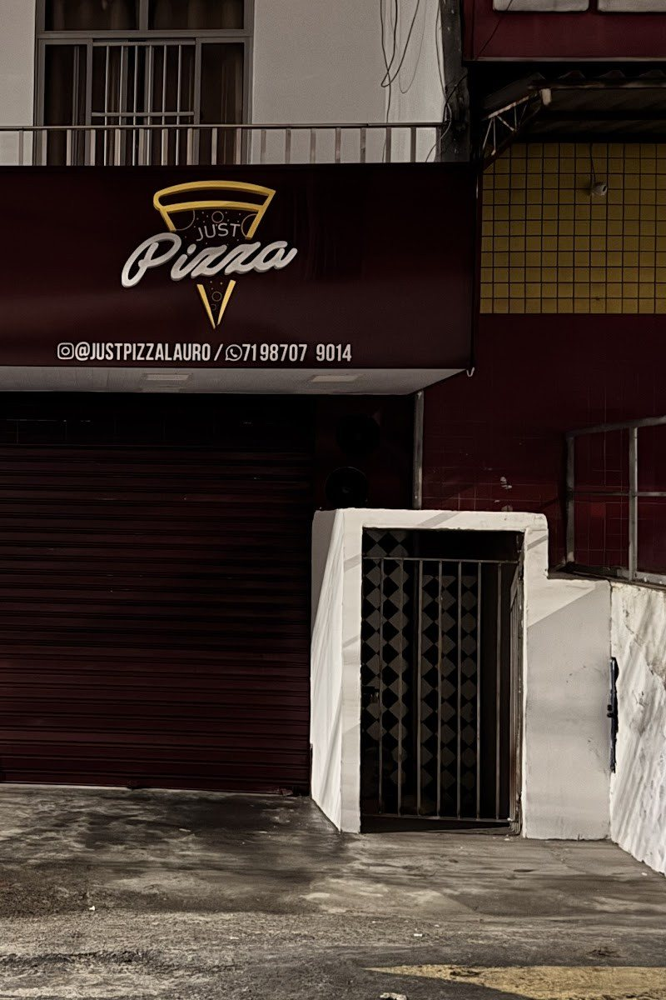

Início · Entrega e retirada
Entrega em 29 bairros e retirada no balcão
Lauro de Freitas, parte de Salvador e de Camaçari, com a taxa de cada bairro publicada pela Just. Ou busque no balcão de Itinga.
Bairros
Quanto custa até você
Esse bairro não está na lista publicada. Pergunte pelo WhatsApp: a Just responde se entrega aí.
Lauro de Freitas 19 bairros
- ItingaR$ 7,00
- CajiR$ 7,00
- Recreio IpitangaR$ 7,00
- AracuíR$ 8,00
- PitangueirasR$ 8,00
- Parque São PauloR$ 8,00
- CentroR$ 8,00
- Vila PraianaR$ 8,00
- Jardim AeroportoR$ 8,00
- AeroportoR$ 10,00
- Caixa D'ÁguaR$ 10,00
- IpitangaR$ 10,00
- Vida NovaR$ 10,00
- Jardim Meu IdealR$ 10,00
- BuraquinhoR$ 11,00
- PortãoR$ 11,00
- Vilas do AtlânticoR$ 11,00
- MiragemR$ 11,00
- QuingomaR$ 13,00
Salvador 8 bairros
- Jardim das MargaridasR$ 7,00
- São CristóvãoR$ 10,00
- Stella MaresR$ 12,00
- Praia do FlamengoR$ 12,00
- Mussurunga e Mussurunga IR$ 14,99
- ItapuãR$ 15,00
- Alto do CoqueirinhoR$ 15,00
- PiatãR$ 16,00
Camaçari 2 bairros
- Busca VidaR$ 13,00
- AbrantesR$ 16,00
Taxas da loja on-line da Just em 06/10/2026. Bairro fora da lista: pergunte pelo WhatsApp.
Horário
Todos os dias, até as 23h
Seg a sex 18h–23h · sáb e dom 17h–23h
Fora do horário, a loja on-line da Just aceita pedido agendado.
Retirada
No balcão de Itinga
Rua Arsênio F. dos Santos, 36 · Jardim Centenário, Itinga · Lauro de Freitas. Fica ao lado do mercado Cesta Básica.

Pagamento
Formas aceitas
- Dinheiro
- Cartão de débito e de crédito
- Pix
- Pagamento on-line
Formas habilitadas na loja on-line da Just; confirme ao pedir.
Dúvidas frequentes
Perguntas comuns
Quanto tempo leva?
A Just não publica um tempo fixo; ela informa ao confirmar o pedido no WhatsApp.
Entrega em Vilas do Atlântico?
Sim, com taxa de R$ 11, segundo a loja on-line.
Entrega em Itapuã?
Sim, com taxa de R$ 15.
Peça a sua
A pizza quentinha chega até você. Ou passe no balcão.
Todos os dias até as 23h. Monte o pedido aqui ou chame a Just no WhatsApp (71) 98707-9014.